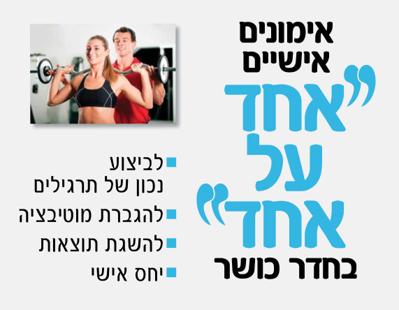

חדר כושר

חדר הכושר החדש מכיל:
- חדר כושר מרווח בגודל 250 מ"ר, ובו מגוון מכשירים אירוביים, מכשירי כוח שונים ומשקולות.
- שני חדרי סטודיו בגודל 120 מ"ר כל אחד, ובהם יתקיימו חוגים רבים ומגוונים בכל שעות היום.
- שירותים ומקלחות חדשים (בנוסף על אילו הקיימים בצמוד לכל בריכה).
חדר הכושר תוכנן ונבנה כך שיוכל לתת מענה טוב למגוון רחב של פעילויות ספורט ובריאות, המתאימות לכל קהל המשתמשים בכל הגילאים (כולל נכים וקשישים). חדר הכושר צויד במתקנים חדשים ומשוכללים באיכות גבוהה, במערכת מיזוג מתקדמת, במערכות קול איכותיות ובתאי אכסון (לוקרים) לשימוש המנויים.
מתקנים

מאמנים אישיים
מבצע החודש
מנויים יקרים,
אני רוצה לתת לכם מתנה - אימון כושר אישי!
(שווי המתנה - 180 ₪)
בעבר רק העשירים והמפורסמים יכלו לאפשר לעצמם לשכור את שרותיו של מדריך כושר אישי.
כיום ניתן לראות מתאמנים רבים בגילאים שונים ומצב כלכלי מגוון מתאמנים בעזרת מדריך כושר אישי.
לכולם יש דבר אחד במשותף מטרה ורצון להשיג תוצאות !
מדריך כושר אישי יכוון אתכם להצלחה!
מדריך כושר אישי יעודד ויתמוך בכם במהלך האימון כך שלא תוותרו לעצמכם. מדריך כושר אישי יודע עד כמה ניתן לדחוף את גופכם באימון מבלי להרחיק מעבר לגבולות היכולת. מדריך כושר אישי ידחוף אתכם קדימה כך שאתם תחזקו את שרירכם, תשפרו סיבולת לב ריאה ותחטבו את גופכם ביעילות וללא מאמציי שווא. כל חזרה וסט שתבצעו יהיו אפקטיביים וייצרו עבורכם תוצאות.
די לעשרות חזרות של כפיפות בטן שרק מבזבזים את זמנכם!
מדריך כושר אישי מונע מצב של שעמום!
מדריך כושר אישי הוא בעל ידע המאפשר לו לגוון את האימון ולמנוע שעמום כתוצאה מאימון חד גוני ומשעמם.
אם אתם תמיד מבצעים את אותו האימון, הגוף מסתגל להשפעות האימון ולא מתייעל, הוא ישרוף פחות קלוריות ויבנה פחות שריר.
אימון עם מדריך כושר אישי מונע פציעות!
מדריך כושר אישי מבקר את אופן ביצוע התרגילים כך שהתרגילים יתבצעו בצורה נכונה ובריאה וע"י כך תמנעו מפציעות ספורט האופייניות למתאמנים מתחילים ולא מנוסים.
מדריך כושר אישי יכיר את גופכם ויצור עבורכם תכנית אימון מתאימה!
מדריך כושר אישי ילמד להכיר את גופכם, מגבלותיכם ואת רמת כושרכם הגופנית. כמו כן הוא ידאג שתוכנית האימון שתתאמנו בה תותאם עבורכם באופן אישי.
מדריך כושר אישי ילמד אתכם להתאמן נכון!
בעזרת מדריך כושר אישי אתם תחשפו לידע עשיר בנושאי כושר ותזונה ידע שיישאר אתכם גם לאחר שתסתיים תקופת האימונים, ואתם תוכלו להתאמן באופן עצמאי ברמה גבוהה.
אימון עם מדריך כושר אישי יגרום לכך שהמסע שלכם בדרך הכושר לגוף בריא, מוצק וחטוב יהיה מהנה, בריא ואפקטיבי יותר.
לפרטים וקבלת ההטבה צרו קשר עם:
צחי שטרכמן - יועץ כושר
מנהל מועדון הכושר
09-7888500
* המתנה מיועדת למנויים שלא קיבלו אימון אישי במסגרת המנוי ולא התאמנו עם מאמן אישי במסגרת אימונים שרכשו.
* בכפוף לתקנון ההטבה.